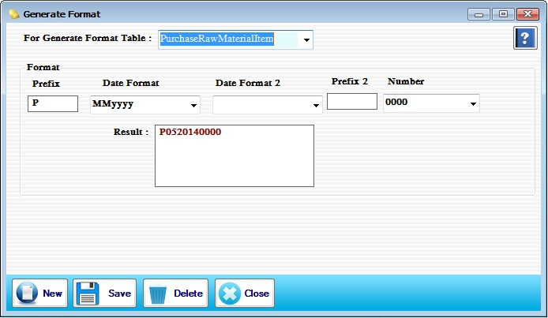

Generate Format Setup

- System Utilities အောက်မှ Generate Format Form ကိုဖွင့်ပါ။
- Generate Format Form သည် Transaction ေအာက်တွင်ရှိသော Form များ၏ Voucher No များကို သုံးစွဲသူ မှလိုသလိုပြုပြင် ရေးဆွဲအသုံးပြု နိုင်ရန်အတွက် Generate Format Form ကို အသုံးပြုရမည် ဖြစ်သည်။ အသုံးပြုရမည့် Form များကို For Generate Format Table တွင်ရွေးချယ်ပါ။
- Generate Format Form သည် Software အသုံးပြုရာတွင် မဖြစ်မနေအသုံးပြုရမည့် Form တစ်ခုဖြစ်သည်။ ၎င်း form ကိုအသုံးမပြုပါက Transaction ေအာက်တွင်ရှိသော Form များကို အသုံးပြု၍ ရမည်မဟုတ်ဘဲ Massage Box ပြပြီး သုံးခိုင်းမည်ဖြစ်သည်။
- Format ချရာတွင် အသုံးပြုသူ၏ စိတ်ကြိုက်သုံးနိုင်အောင် ပြုလုပ်ပေးထားပါသည်။ For Generate Format Table တွင် ရွေးချယ်ပါ ပြီးလျှင် Prifix တွင် ရွေးချယ်ထားသည် Form အမည်အား အတိုကောက်ရေးပါ။(ဥပမာ- PurchaseRowMaterialItem ဟုရွေးထားပါက Prefix တွင် PI (သို့)PM စသည်ဖြင့်စိတ်ကြိုက်ထားနိုင်ပါသည်။) Date Format တွင် ddMMyyy (သို့) dd (သို့) MM စသည်ဖြင့်ထားနိုင်ပါသည်။ Date Format2 တွင်လည်း ကြိုက်နှစ်သက်ရာ ddMMyyy (သို့) တစ်ခုချင်းစီ ထားနိုင်ပါသည်။ Prefix 2 တွင်လည်း ဖြည့်စွက်လိုပါက ဖြည့်စွက်ပါ။ Number တွင် “0” ၄လုံး (သို့) ၅လုံး ရွေးချယ်နိုင်ပါသည်။ Result တွင် မိမိ အပေါ်တွင်သတ်မှတ် ခဲ့သော Format အတိုင်းကျနေပါလိမ့်မည်။
- Data များဖြည့်စွက်ပြီးပါက Save Button ကိုနှိပ်ပြီး သိမ်းဆည်းနိုင်ပါသည်။
- အသစ်ထည့်လိုပါက New Button ကိုနှိပ်ပြီး အသစ်ထည့်နိုင်ပါသည်။
- သိမ်းဆည်းထားသော Data များကို ဖျက်လိုပါက For Generate Format Table တွင် ဖျက်လိုသည့် Data ကိုရွေးပြီး Delete Button နှိပ်၍ဖျက်နိုင်ပါသည်။
- Generate Format Form ကို အသုံးပြုပြီးပါက Close Button ကိုနှိပ်ပြီး ပိတ်နိုင်သည်။